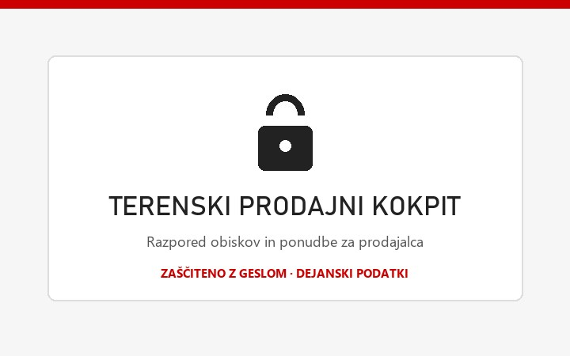
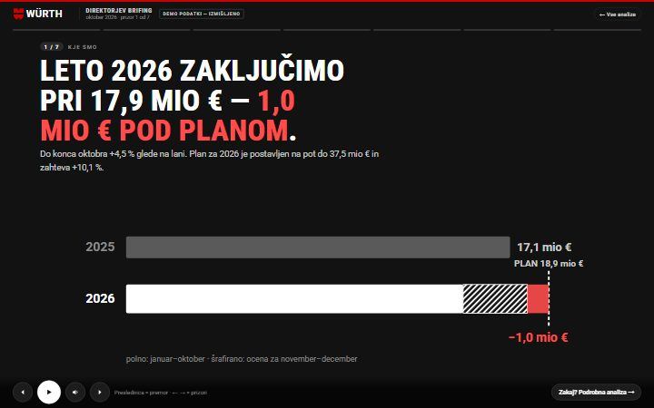
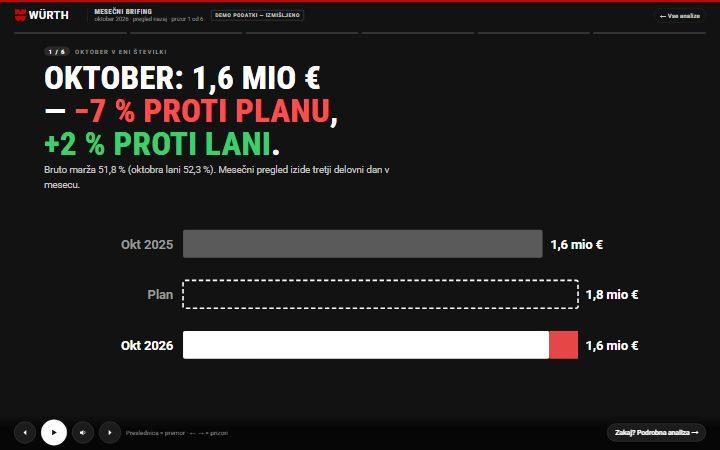
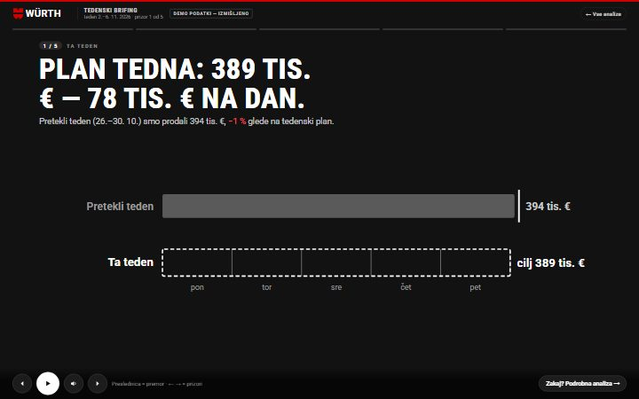
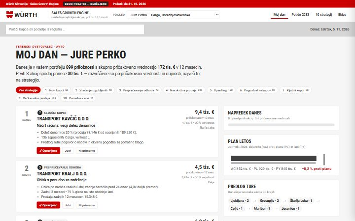
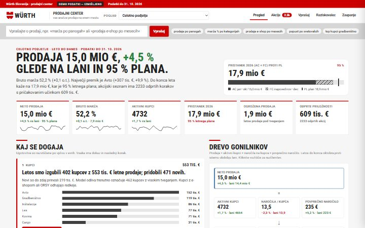
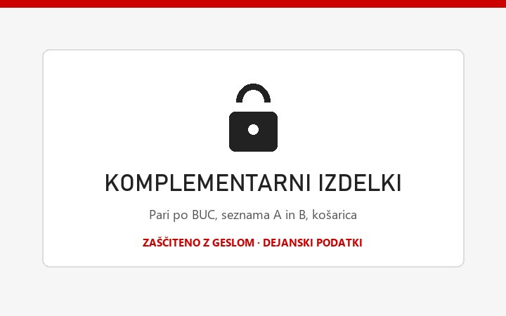
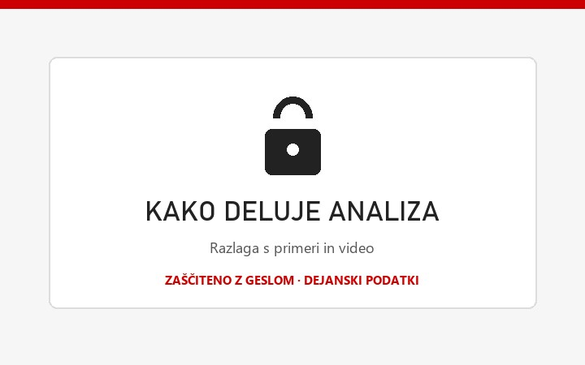

Dvajset polno delujočih analiz prodaje v grafični podobi Würth Slovenija: kokpit za upravo, liga svetovalcev, opozorila odliva, bele lise, cenovni slap, most marže, trgovine, zemljevid trga, napoved, teren, ponudbe, kupec 360 in mesečno poročilo. Vse delujejo na istih simuliranih podatkih, umerjenih na letno poročilo 2025: 36 mesecev prodaje, ~17 mio € na leto, 7 trgovin, tri divizije, e-shop, aplikacija in skladiščne omare. Klik na kartico jo obrne in pokaže namen analize.

Razpored obiskov za vsakega prodajalca: ta teden po krajih, pri vsakem obisku kaj ponuditi in zakaj, artikli za košarico in stavek za pogovor. Iz seznamov komplementarnih izdelkov, z izidom obiska.
Odpri stran 24 →
Leto, vzroki, tveganja, pot do 2033, ekipa in tri odločitve — animirana zgodba z glasom in podnapisi.
po potrebi · ~3 minPredvajaj →
Oktober proti planu in lani, odstopanja po divizijah, kanali, novi in izgubljeni kupci, ekipa in fokus za november.
3. delovni dan v mesecu · ~1,5 minPredvajaj →
Kaj nas čaka ta teden: plan tedna, koledar sestankov in rokov, projekti, ki se odločajo, kupci, ki naj bi naročili, in pet prioritet.
vsak ponedeljek · ~1,5 minPredvajaj →
Vsak dan vsakemu svetovalcu pove, pri katerem kupcu je največja naslednja priložnost, kaj naj naredi in zakaj. Pokriva vseh deset strategij rasti: novi kupci, vračanje izgubljenih, zadrževanje, navzkrižna prodaja, upselling, pogostost nakupov, ključni kupci, omnikanal, skladiščne omare in cene.
Odpri stran 22 →
Najboljše ideje prvih dvajsetih strani v enem orodju: izračunan povzetek tedna, vprašanja v navadnem jeziku, opozorila odliva z razlogi, bele lise in priporočila, scenarij do konca leta in akcijski seznam za vsakega svetovalca.
Odpri stran 21 →
Na prejetih dejanskih prodajnih podatkih: kateri pari skupin izdelkov se dopolnjujejo med kupci iste BUC kode, kdo kupuje produkt 1, ne pa produkta 2 (in obratno), s časovnim preizkusom, kakovostjo podatkov in odprtimi vprašanji. Zaščiteno z geslom.
Odpri stran 27 →
Preprosta razlaga komplementarnih izdelkov: od vrstic do parov, po čem se združuje, kazalniki (moč, P(2|1), isti račun, časovni preizkus) na resničnem primeru, seznama A in B, košarica in priporočila za kupca — ter kaj bi analiza zmogla z vrednostmi, popusti in maržami. Zaščiteno z geslom.
Odpri razlago →Kliknite oblaček na katerikoli strani in zapišite, kaj deluje in kaj ne. Komentarje strnem v smernice in jih upoštevam pri naslednjih straneh. Desno je prostor za komentar celotne zbirke.
Preverjam shranjevanje …